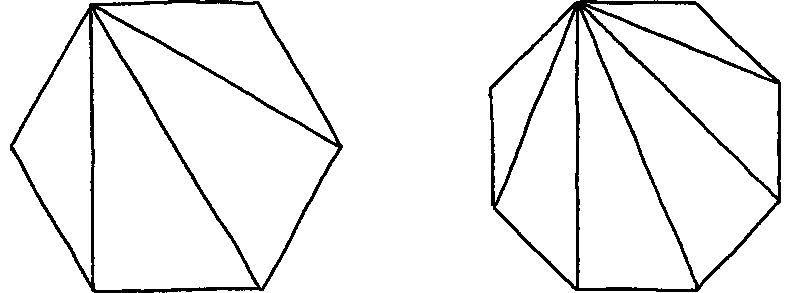
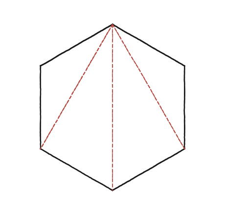
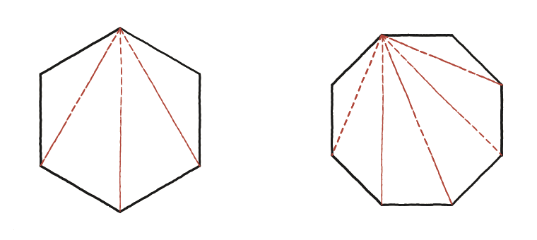

Es poden mesurar les diagonals i les àrees de l'hexàgon i l'octàgon regulars?

No cal redemostrar res
Un polígon de n costats, triangulat amb diagonals des d'un sol vèrtex, dona sempre n−3 diagonals i n−2 triangles. Aquesta relació general no es demostra aquí de nou —ve d'un resultat més ampli que es tracta en un altre punt del llibre. El que demana aquesta pregunta és aplicar-la amb valors concrets de n, i després anar un pas més enllà: mesurar realment les diagonals i l'àrea.
Comptar amb els dits abans de confiar-hi cegament
Abans d'aplicar la fórmula sense pensar-hi, val la pena comptar-ho directament sobre un cas conegut: a l'hexàgon (n=6), des d'un vèrtex en surten 3 diagonals visibles, que creen 4 triangles. Coincideix amb n−3=3 i n−2=4. Un cop confirmat aquest cas petit, la mateixa fórmula es pot aplicar amb confiança a l'octàgon (n=8): 5 diagonals, 6 triangles.

Mesurar les diagonals: no totes fan el mateix
Aquí comença la part que l'enunciat demana de debò: mesurar, no només comptar. En un hexàgon regular de costat s hi ha dues llargades de diagonal diferents. La curta (la que salta un sol vèrtex) és la base d'un triangle isòsceles amb dos costats s i un angle de 120° entre ells —el mateix tipus de triangle que ja es resol amb el mètode de la Qüestió 26 (partir-lo per la meitat amb una altura, i aplicar Pitàgores). Aquesta diagonal curta val s√3 ≈ 1,732s. La llarga (la que travessa el centre, del vèrtex a l'oposat) no necessita cap càlcul: com que un hexàgon regular és exactament sis triangles equilàters de costat s al voltant del centre, aquesta diagonal és senzillament dos radis seguits, és a dir, 2s.

L'àrea, i el mateix mètode a l'octàgon
L'àrea de l'hexàgon regular surt de sumar els sis triangles equilàters que el formen: 6 × (√3/4)s² = (3√3/2)s² ≈ 2,598s² —reutilitzant, un altre cop, el resultat de la Qüestió 28. L'octàgon es fa exactament amb el mateix mètode, només que amb tres llargades de diagonal diferents en lloc de dues (les que salten 1, 2 i 3 vèrtexs): cadascuna és, igualment, la base d'un triangle isòsceles format per dos radis del polígon.
Hexàgon (n=6): 3 diagonals, 4 triangles des d'un vèrtex; diagonal curta s√3, diagonal llarga 2s; àrea (3√3/2)s². Octàgon (n=8): 5 diagonals, 6 triangles; tres llargades de diagonal diferents, cadascuna mesurable amb el mateix mètode (base d'un triangle isòsceles de dos radis). Tot surt d'aplicar una fórmula general (demostrada en un altre punt del llibre) a casos concrets, sense repetir-ne l'argument.
Comprovació
Hexàgon (n=6): 3 diagonals, 4 triangles, suma d'angles 720°. Octàgon (n=8): 5 diagonals, 6 triangles, suma d'angles 1080°. Amb s=1, diagonal curta de l'hexàgon: 1,732; diagonal llarga: 2.